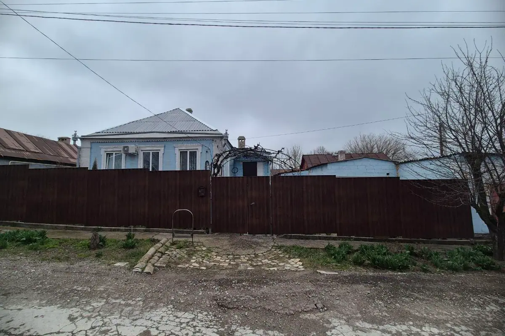

Продажа4 500 000 ₽Крепкий ухоженный дом, 94.4 м²Ильичёвский район, ул. Ермака · 4 комн. · 94.4 м²Подробнее
Продажа1 800 000 ₽1-комн. квартира на земле с ремонтом, 30.3 м²Ильичёвский р-н, ул. Доменная · 1 комн. · 30.3 м²Подробнее
 ПродажаПродажа
ПродажаПродажа